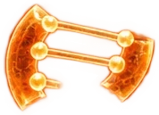
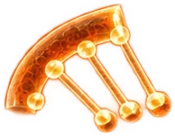
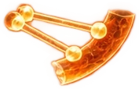
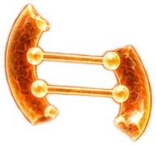

TERMINAL SOVEREIGN — ACCÈS RESTREINT
ANALYSE GÉNÉTIQUE
ГЕНЕТИЧЕСКИЙ АНАЛИЗ · ТЕРМИНАЛ «СУВЕРЕН» · ДОСТУП ОГРАНИЧЕН
ÉCHANTILLON—
ÉTAT DU SCANNEREN VEILLE
HORODATAGE—

ZONE D'ÉCHANTILLON
X 000.00 · Y 000.00


RÉSERVOIR
 0/8
0/8
GROSSISSEMENT
×10
MISE AU POINT
RECONNEXION DES BRINSВОССТАНОВЛЕНИЕ НИТЕЙ ДНК





INTÉGRITÉ RESTAURÉEЦЕЛОСТНОСТЬ ВОССТАНОВЛЕНА
0%
Stabilisation de l'échantillonСтабилизация образца
DOSSIER D'IDENTIFICATION · ЛИЧНОЕ ДЕЛО
ЛИЧНОЕ ДЕЛО № —
—

 99,8 %
99,8 %
—
#0000
RAPPORT TOXICOLOGIQUEТОКСИКОЛОГИЧЕСКИЙ ОТЧЁТ
SESSION TERMINÉE
Сеанс завершён · terminal verrouillé